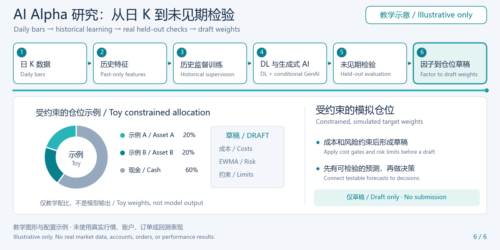

EWMA：最近的冲击占多少权重？
假设旧的日波动率为 2%。改变平滑系数和最近一天已发生的收益，观察下一日风险估计。
σ²new = λ · σ²old + (1 − λ) · r²
下一日估计波动率
条形表示混合系数，不是方差贡献比例。本例忽略均值；完整研究还需考虑股票之间的协方差。
从日 K、历史特征与未来答案，走到深度学习、生成式增强、未见期检验和受约束仓位。每一步都要能解释、能检查。
公开教学演示 · 所有数值均为假设示例 · 不接入账户或交易服务

GIF 适合 README 快速展示；下面的交互示例用于理解公式。动图没有展示真实回测收益。
假设旧的日波动率为 2%。改变平滑系数和最近一天已发生的收益，观察下一日风险估计。
条形表示混合系数，不是方差贡献比例。本例忽略均值；完整研究还需考虑股票之间的协方差。
三个假设资产的五日收益预测为 1.2%、0.5%、0.05%；年化波动率为 30%、20%、40%。先过成本门槛，再分配风险。
| 资产 | 预测 | 过门槛 | 目标权重 |
|---|
示例固定保留至少 20% 现金、资产相关系数为 0.4。封顶后不重新分配，风险缩放只减仓；这里没有可发送的订单。
第一版 h = 5：收盘后形成信号，用 t+1 开盘到 t+6 开盘的五日收益，减去基准 SPY 同期收益。历史训练可以用后来已知的答案，实时预测不能使用尚未发生的答案。
网络先预测，再计算误差，用梯度调整参数。标准化只拟合训练期。这里展示的是基本梯度思想；实际可使用 Adam 等优化器。
条件扩散模型在训练期学习收益分布，逐步去噪生成与历史条件配套的样本。合成样本不是新的真实市场证据；要与真实数据训练和重采样对照，在未见过的真实时期评价。
同一天比较多只股票的预测排序和实际排序。IC 衡量预测关系，净值还受到仓位、市场暴露、成本和成交时点影响。五日标签会重叠，不能把相邻日期当作独立样本。
预测分数先判断是否值得交易。通过后按逆波动分配，加入单股上限、现金和组合风险约束。排名分数若没有收益单位，还需在独立验证期校准，才能与成本比较。
第一步先建立可检查的风险尺度。厚尾、跳跃和波动聚集是不同问题；常参数 Lévy 收益过程不会自动描述持续变化的波动。更复杂的模型应由具体研究问题和样本外检验来决定。
EWMA 官方定义将 GIF 保存到仓库，再用相对路径嵌入 README。动画用于概览，这个网页用于交互探索；完整研究程序在独立环境运行。